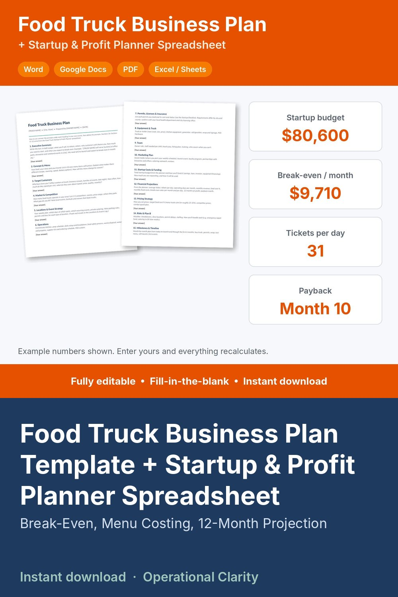

Food Truck Business Plan Template + Startup & Profit Planner Spreadsheet

FOOD TRUCK BUSINESS PLAN TEMPLATE + STARTUP & PROFIT PLANNER | Editable Word, Google Docs, PDF + Excel / Google Sheets | Instant Download
Planning a food truck? This kit gives you a fill-in-the-blank business plan AND the spreadsheet that does the math behind it: what it costs to start, what each menu item really costs, how much you have to sell to break even, and when you get your startup money back.
THE PLANNER SPREADSHEET (Excel / Google Sheets)
• Startup costs: truck, kitchen equipment, generator, wrap, POS, permits, insurance, first inventory, fire suppression and 3 months of working capital, with the total, what's paid, what's left, and how it's funded (savings, loan, investor, financing, grant)
• Menu costing: food + packaging cost per item, food cost %, profit per item, and a red flag on anything over your target food cost (you set the target)
• Monthly costs: commissary, insurance, truck loan, fuel & propane, POS software, permits, repairs reserve and more, plus labor per service day from your wage, staff and hours
• Break-even: sales per month, tickets per month AND tickets per service day, using your average ticket, card fees and labor
• 12-month projection: seasonal service days and tickets per day, revenue, every cost, net profit, cumulative cash and your payback month, with a chart
• Locations & events log: record each stop or event, its fee and hours, and it ranks your spots by net sales per hour so you know where to park
• Dashboard: your key numbers on one page
THE BUSINESS PLAN (Word + PDF)
• 15 fill-in sections with prompts under each heading: Executive Summary, Concept & Menu, Target Customers, Market & Competition, Locations & Event Strategy, Operations, Permits, Licenses & Insurance, Equipment & Truck, Team, Marketing Plan, Startup Costs & Funding, Financial Projections, Pricing Strategy, Risks & Plan B, Milestones & Timeline
• Startup checklist: business setup, typical permits & licenses, insurance, truck & equipment, launch
• The financial sections line up with the planner, so you copy your numbers straight in
WHAT YOU GET (one ZIP file)
• Food_Truck_Business_Plan.docx + .pdf
• Food_Truck_Startup_and_Profit_Planner.xlsx
• 0_START_HERE guide (Word + PDF)
Sample numbers (a taco truck) are filled in so you can see how everything works. Replace them with yours and every total, flag and chart updates.
HOW TO USE
• Word: open in Microsoft Word, Pages or Google Docs (upload the .docx to Google Drive, then open with Google Docs)
• Spreadsheet: open in Excel, or upload to Google Drive and open with Google Sheets. Yellow cells are for typing; green cells calculate.
INSTANT DIGITAL DOWNLOAD. No physical item will be shipped.
Not financial or legal advice. Permit, licensing and health rules differ by city and state: check with your local health department.